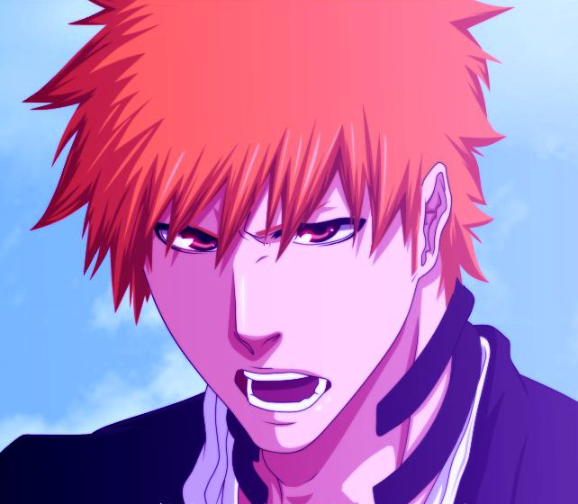
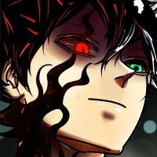
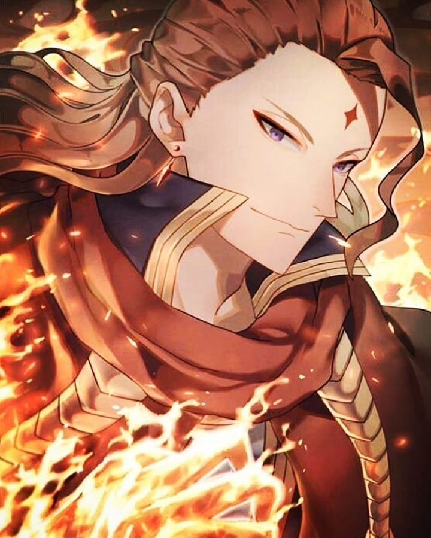
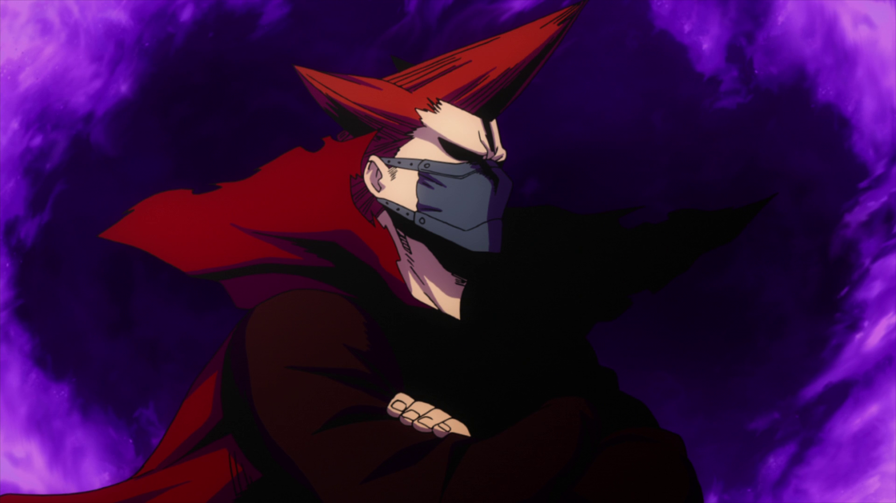

Anime Characters
(黒崎 一護)Ichigo Kurosaki
"The difference in ability... what about it? Do you think I should give up just because you're stronger than me?"
Anime: Bleach
When he was younger, Ichigo considered his mother to be the center of his world, always smiling when he was with Masaki and regularly holding her hand. Despite crying whenever he lost in a match at the dojo he attended, Ichigo started to smile again as soon as he saw Masaki when she came to pick him up. At a very young age, Ichigo heard his father saying his name means "to protect one thing," which instilled in him a desire to protect his mother. When his sisters were born, he began attending a dojo for the sake of protecting them. Since then, the number of people he wishes to protect has continued to grow, causing Ichigo to risk his life to protect both the people close to him and complete strangers.
(アスタ)Asta
"My magic is never giving up!"
Anime: Black Clover
Asta generally is cheerful and hyperactive. He tends to shout to express his thoughts and goals, much to the annoyance of some of those around him, and often in spite of other people's opinions. One of the first examples of this is when he conveyed his goal of becoming a Magic Emperor during the Magic Knights entrance exam, and told other people who jeered at him to be quiet. Asta's simple yet outgoing personality is frequently played to comedic effect during more serious situations. However, his strong tenacity interests Yami Sukehiro enough to recruit him into his ranks, and his determination also leads him to possess an indomitable will. Asta's determination to never give up, added with his own steel fortitude during grueling or harsh battles, is a trait that becomes the basis for others to acknowledge him, such as Magna Swing. However, Asta has shown to have struggled accepting his lack of magic, using his boisterous attitude as a front to hide his insecurity. After having his arms broken and cursed by Vetto, Asta nearly slips into a depression before talking and forcing himself to continue pushing onward.
(フエゴレオン・ヴァーミリオン) Fuegoleon Vermillion
"Being weak is nothing to be ashamed of... Staying weak is!"
Anime: Black Clover
Fuegoleon is a fair person that judges people from their true worth rather than their social status. This side of him is seen when he is defending Asta from the House Silva's oppression by reasoning with them that Asta was brought by Julius Novachrono, which means that the Magic Emperor has acknowledged his worth. Furthermore, his act also shows his view of justice where he would not stand and stay silent when someone is being oppressed regardless of the reason or the status of the perpetrator. Fuegoleon has also been shown to have a charismatic personality that translates to his leadership ability. He is able to quickly take charge of a situation and deploy orders accordingly, such as giving several Knights orders after shortly being informed that the Royal Capital is being invaded.[11] Fuegoleon is also very calm and collected in dire situations. He is capable of analyzing and finds his opponent's weaknesses, even while defending against a barrage of attacks.
(紅頬権斗) Crimson Riot
"It doesn't matter what your quirk is if you've got a chivalrous heart!"
Anime: My Hero Academia
Crimson Riot seems to be a hero with a very strong will who believes that willpower is more important than one's Quirk, stating, "As long as you have a manly spirit, it doesn't matter what kind of Quirk you have." He clearly states that for him, the word "manly" refers purely to a state of mind, essentially determination and courage, and therefore isn't gender specific, and can be found as much in men as in women. Crimson Riot is haunted by an incident early in his career where his momentary hesitation led to civilian deaths. As a result of this traumatic experience, Crimson Riot became more fearful of watching innocent people die than of dying himself. Ironically, heroics fueled by this fear gave him a reputation as a fearless hero who always charged headfirst into danger without hesitation.